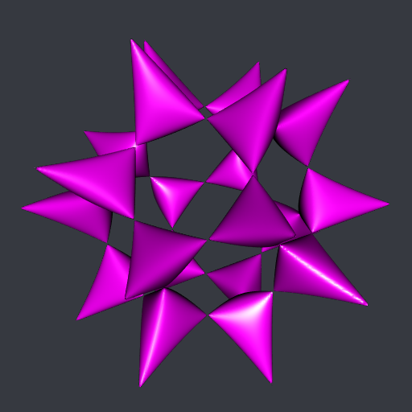
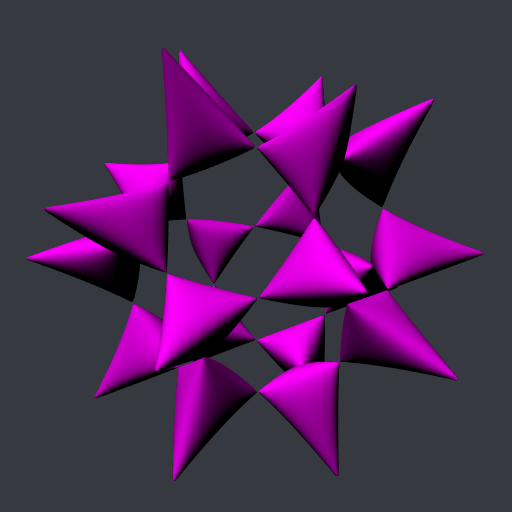

A dull and shadowed 'rgl' mesh
Posted on September 8, 2023
by Stéphane Laurent
The visualization of a rgl mesh is rather shiny by default. We’ll see how to make it dull and shadowed.
Take for instance the Barth sextic:
## Barth sextic is the isosurface f=0 ####
phi <- (1 + sqrt(5)) / 2
f <- function(x, y, z){
4 * (phi^2*x^2 - y^2) * (phi^2*y^2 - z^2) * (phi^2*z^2 - x^2) -
(1 + 2*phi) * (x^2 + y^2 + z^2 - 1)^2
}
## make the isosurface ####
nx <- ny <- nz <- 250L
x <- seq(-1.8, 1.8, length.out = nx)
y <- seq(-1.8, 1.8, length.out = ny)
z <- seq(-1.8, 1.8, length.out = nz)
Grid <- expand.grid(X = x, Y = y, Z = z)
voxel <- array(with(Grid, f(X, Y, Z)), dim = c(nx, ny, nz))
# we want to clip the mesh to the ball of radius √3, so we
# assign a negative value to the voxel points outside this ball
mask <- array(with(Grid, X^2 + Y^2 + Z^2 > 3), dim = c(nx, ny, nz))
voxel[mask] <- -1
# run the marching cubes
library(rmarchingcubes)
cont <- contour3d(voxel, level = 0, x = x, y = y, z = z)
## plot ####
library(rgl)
mesh <- tmesh3d(
vertices = t(cont[["vertices"]]),
indices = t(cont[["triangles"]]),
normals = cont[["normals"]]
)
#
open3d(windowRect = 50 + c(0, 0, 512, 512))
bg3d("#363940")
view3d(20, 45, zoom = 0.6)
shade3d(mesh, color = "#ff00ff")
It is shiny. That’s because of the default lighting used by rgl. To get a dull and shadowed mesh, one has first to destroy these lights, and then to include our own light(s):
open3d(windowRect = 50 + c(0, 0, 512, 512))
bg3d("#363940")
view3d(20, 45, zoom = 0.6)
clear3d(type = "lights") # destroy current lights
light3d(x = -50, y = 100, z = 100, ambient = "black")
shade3d(mesh, color = "#ff00ff", specular = "black")I also use a black specular light, it corresponds to the color for the shadows.
